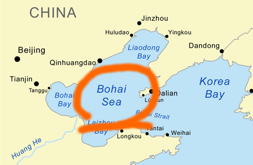

Questions & Answers
What is Metasepi?
Challenge to create a free software Unix-like operating system designed with strong type.
Photo: Copyright (C) 2007 Silke Baron All Rights Reserved.
How do you get it?
Use iterative development. First, we choose language and development method as design, then develop OS for testing with the design. Finally, study the actual results before closing the iteration.

What is Bohai design?
2nd code name of a Metasepi’s design. And home of Hongwei Xi as the author of ATS Programming Language. Detail of Bohai design is found at Map page.

What is Arafura design?
Initial code name of a Metasepi’s design. And you know where Metasepia pfefferi live in. Detail of Arafura design is found at Map page.